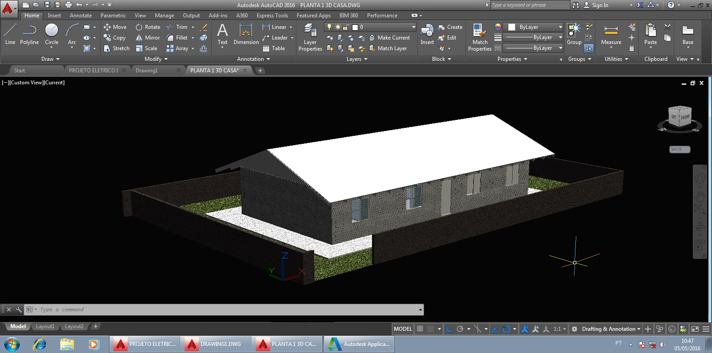
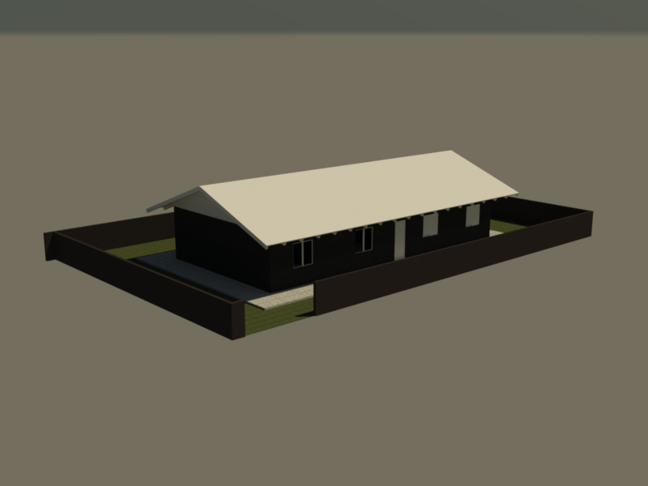
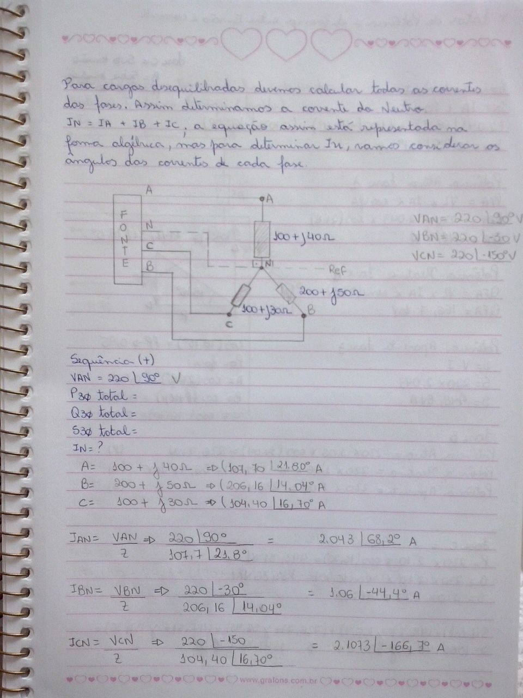
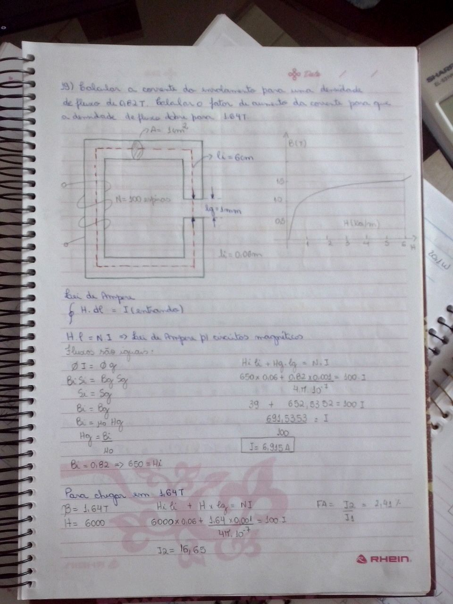
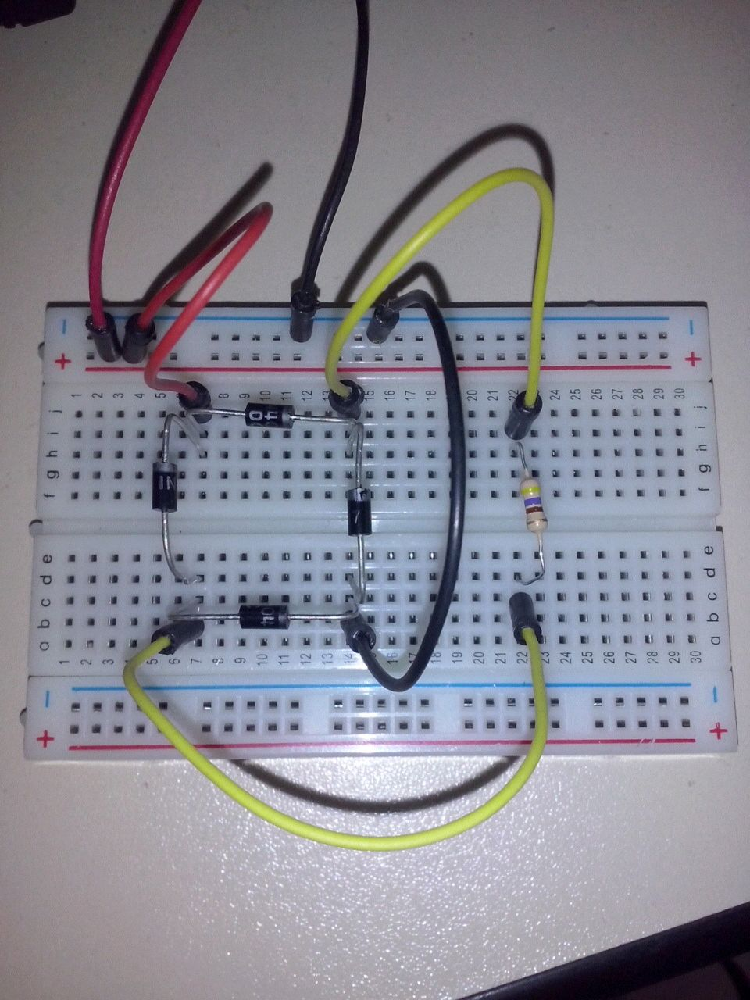

Nadir Maria Ody
nadir [dot] ody [at] gmail [dot] com
Sou técnica em Eletrotécnica pelo CEDUP Blumenau, e atualmente estudante do curso de Engenharia Elétrica (8º semestre) da Uniasselvi Timbó.
Atuei nos processos de bobinagem, montagem, ligação e acabamento das linhas de indutores e transformadores das mais variadas aplicações.
Além disso, trabalhei também na área de projetos elétricos e orçamentos, ou seja, cálculos, processo de aprovação de projetos junto ao cliente final, acompanhamento efetivo dos processos de fabricação, inspeçãoo de clientes e terceiros interpretação de documentos específicos com equipamentos para aplicações especiais, elaboração de lista de materiais utilizando o sistema SAP, avaliação técnica de materiais necessários para a fabricação (isolantes, disjuntores, relés, bornes, entre outros), para os seguintes equipamentos de Baixa Tensão.
Conhecimentos em:
- Transformadores e Autotransformadores Trifásicos e Monofásicos para as seguintes aplicações:
- Instalação em áreas classificadas (refinarias de petróleo, ambiente com a presença de gases);
- Transformadores com Duplo Secundário (12 pulsos);
- Características especiais para funcionamento em paralelo, ambientes sujeitos a vibrações externas e atmosféricas;
- Transformadores com enrolamentos com láminas, fios retangulares ou circulares em alumínio ou cobre;
- Transformadores para bancadas de medições;
- Reatores Monofásicos e Trifásicos para as seguintes aplicações:
- Corrente contínua e alternada;
- Para inversores de frequência;
- Para banco de capacitores;
- Para aplicações especiais como Drives WEG.
Dedicação e interesses:
- Projetos elétricos de baixa tensão;
- Iliminação residencial utilizando AutoCad 3D (Figura 1, 2 e 3);
- Transformação eletromecanica, principalmente em transformadores (Imagem 1, 2 e 3) ;
- Eletronica Básica I (Imagem 3).
 |
 |  |  |  |  |
| Figura 1 | Figura 2 | Figura 3 | Imagem 1 | Imagem 2 | Imagem 3 |